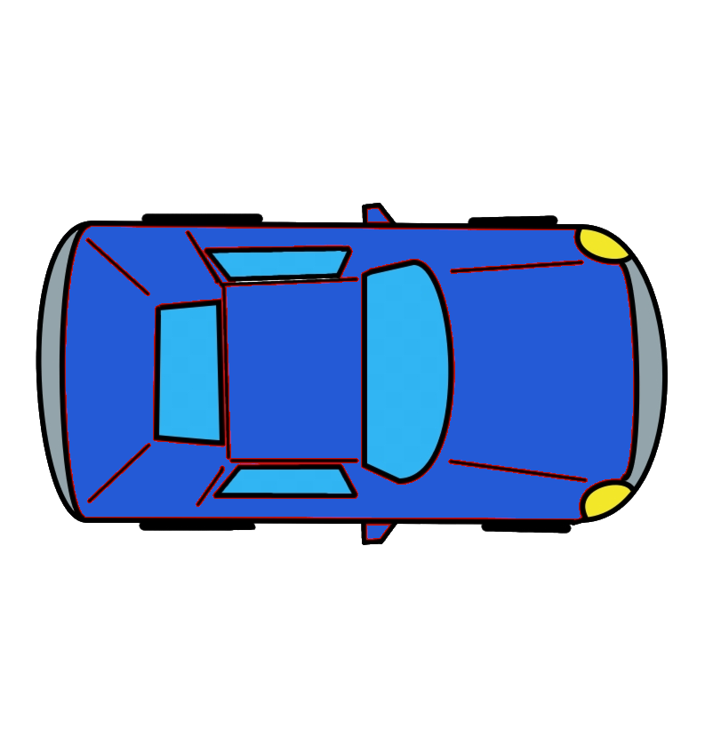
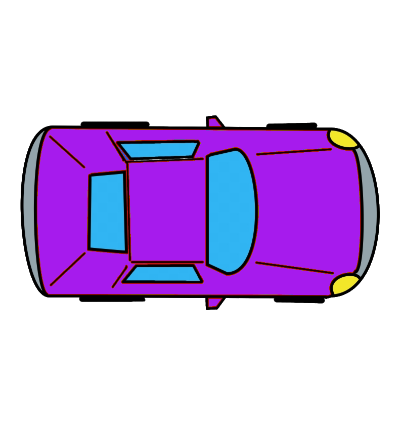

Križovatku si vyriešil správne!
Mal by si si zopakovať testy z autoškoly.
Stlač Start a následne klikni na autíčká v takom poradí, ako by reálne mali prejsť cez križovatku. Po kliknutí na jednotlivé autíčka sa spustí animácia. Ak chceš vidieť riešenie križovatky stlač Demo. Ak chceš zopakovať svoj pokus, stlač Reset.